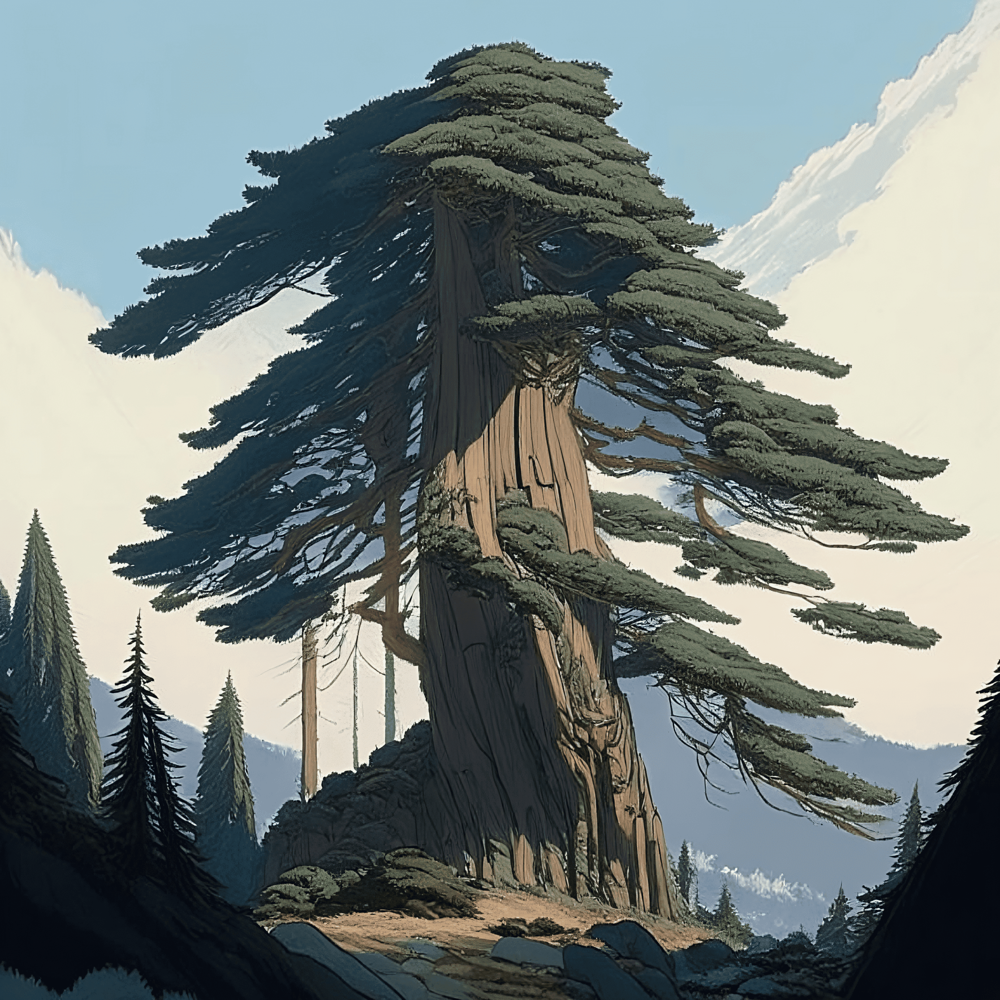

Одно из растений ТехноТерры. Выглядит она, как обычная, высокая секвойя, но у этого вида очень толстый ствол и
очень крепкие корни.

Не интересные факты:
Живет примерно 15 марсианских лет.
Имеет полезный для человека сок, но он очень специфического вкуса.
Рекордная высота 583 метра.
Она является символом экологической чистоты и сохранения природы на ТехноТерре.
Назад